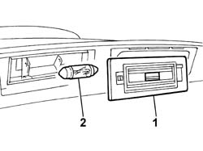

5540A94 l/h or r/h number plate light (one) - r+r
- Path
- Procedures > 55 ELECTRICAL EQUIPMENT > 5540 EXTERIOR LIGHTING > 5540A LIGHTING > 5540A94 l/h or r/h number plate light (one) - r+r
- Kind
- repair procedure (removal / refitting; the operation number is the code)
- Applies to
- all engines; all production periods
- Interactive page
- https://sloeber94.github.io/elrnDB-fPnd/en/#/2752972
Applies to: all engines; all production periods
 Removing
Removing
 Refitting
Refitting1. Using a suitable tool, remove the number plate light lens.
2. Remove the number plate light bulb.

Applies to: all engines; all production periods
Refitting
RemovingFit the number plate light bulb.
Fit the number plate light bulb in its seating and check that it is secure.